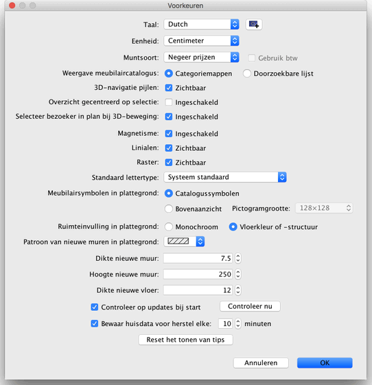

| Voorkeuren aanpassen | |||
Kies Sweet Home 3D > Voorkeuren... onder Mac OS X of Bestand > Voorkeuren... onder andere systemen, om de voorkeuren in Sweet Home 3D aan te passen.  In het voorkeurenpaneel kun je de Taal kiezen die in Sweet Home 3D gebruikersinterface wordt gebruikt en de Eenheid die wordt gebruikt voor de linialen en het raster van de plattegrond, en om lengtes en oppervlaktes weer te geven. Met de keuzevakjes Categoriemappen en Doorzoekbare lijst kun je kiezen hoe de meubilaircatalogus weergegeven moet worden in ieder Sweet Home 3D venster. Het selectievakje Overzicht gecentreerd op selectie zal het 3D-beeld centreren op de geselecteerde items van de plattegrond. Als er geen item is geselcteerd of de optie is niet ingeschakeld, zal het overzicht gecentreerd zijn op het centrum van het huis, dat kan variëren al naar gelang de items die er in aanwezig zijn. Wanneer ingeschakeld Selecteer bezoeker in plan bij 3D-beweging keuze selecteert en wordt de virtuele bezoeker getekend die in het 2D-plan is getekend, elke keer dat u een beweging maakt in de 3D-weergave in Virtueel bezoek Modus. U moet deze optie uitschakelen als u de huidige selectie in het plan niet wilt verliezen en / of het zichtbare deel van het plan bij elke beweging in de 3D-weergave wilt wijzigen. Het vakje Magnetisme schakelt magnetisme in de plattegrond tijdens het tekenen van muren en het plaatsen van meubilair in of uit. De waarde Dikte nieuwe muur stelt de dikte in van alle muren die gemaakt worden nadat het voorkeurenpaneel is gesloten. De optie Controleer op updates bij start programma zorgt voor controle op nieuwe updates bij iedere start en zal deze tonen in een dialoogvenster. Deze optie controleert eveneens de beschikbaarheid van updates voor de meubilairverzamelingen (SH3F-bestanden), structuurverzamelingen (SH3T-bestanden), taalverzamelingen (SH3L-bestanden) en plug-ins (SH3P-bestanden) die je hebt geïnstalleerd, afhankelijk van hoe ze zijn geconfigureerd. De waarde van het veld dat naast het vakje Bewaar huisdata voor herstel staat, stelt de tijd in minuren tussen twee keer opslaan van het geopende huis in. Deze huizen worden automatisch opgeslagen in privé bestanden, die bij de volgende start van Sweet Home 3D worden gebruikt voor herstel wanneer het programma crasht.
|


|